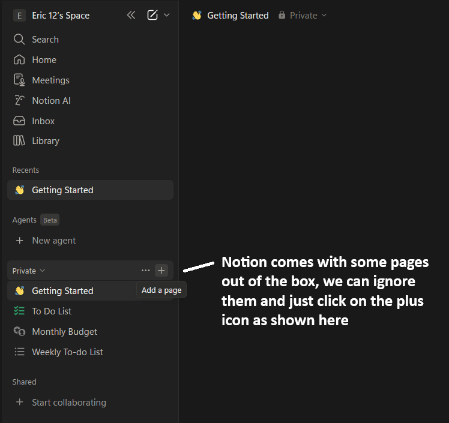
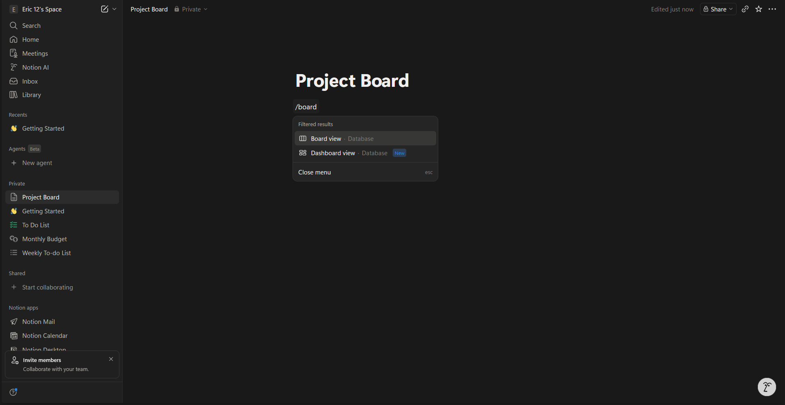
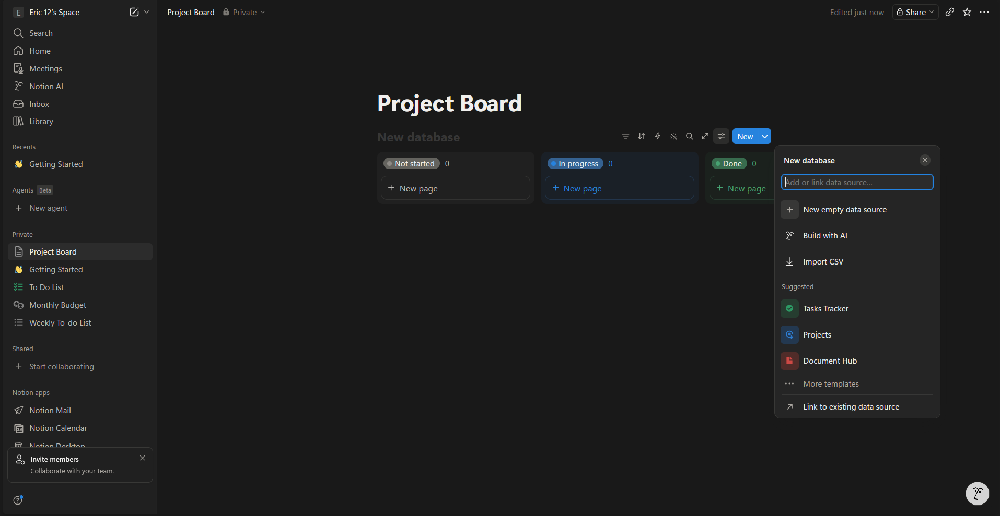
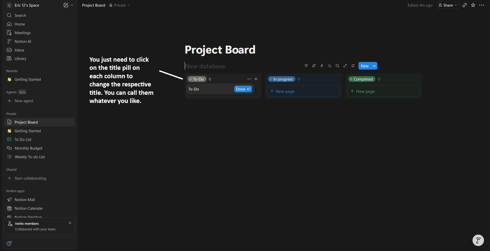
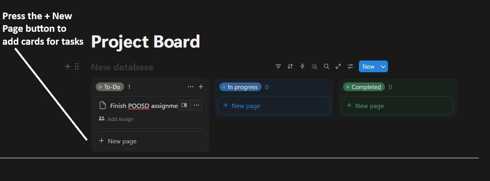
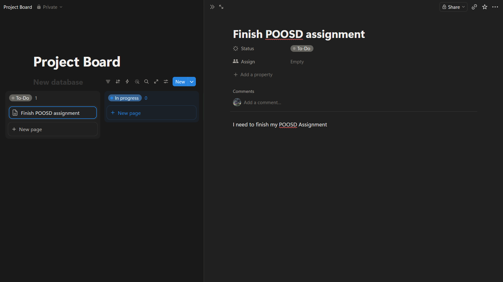
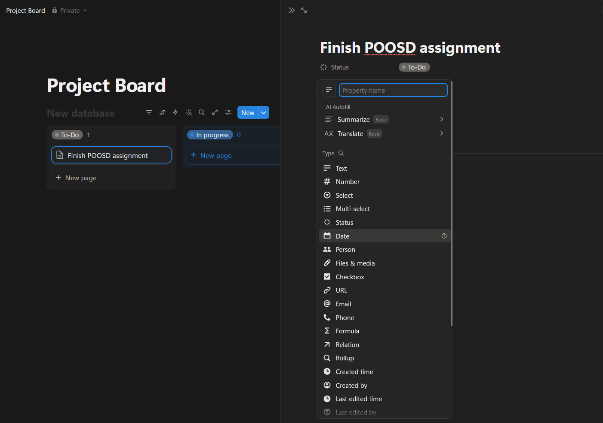
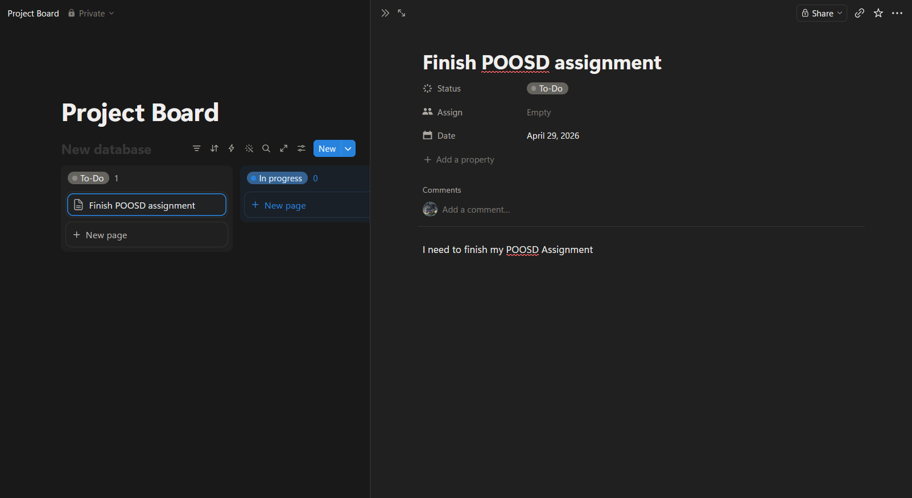
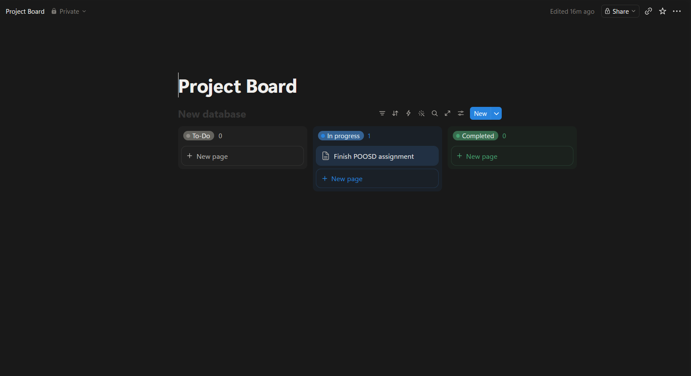
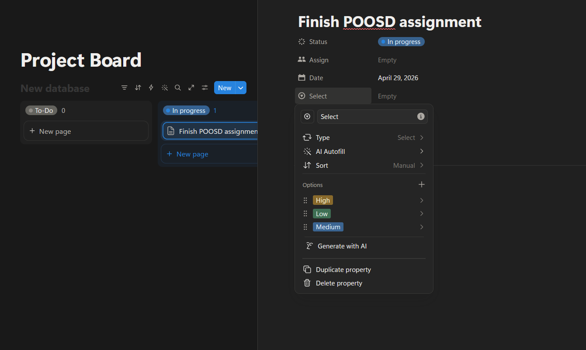

Project Context
My goal was to make the document easy to follow for someone who may not already be comfortable with Notion. I focused on short steps, plain language, and a structure that lets readers check their progress as they build.
Download PDFProject 01
For this project, I wrote a set of instructions for building a Kanban board in Notion. I chose this topic because project boards are useful in school, software development, and team planning, but they can feel overwhelming if the setup process is not explained clearly.
My goal was to make the document easy to follow for someone who may not already be comfortable with Notion. I focused on short steps, plain language, and a structure that lets readers check their progress as they build.
Download PDFThe revised instructions are included below in a web-friendly format.
The intended audience for these instructions is college students and early-career individuals who want to organize tasks but have little to no experience using project management tools like Notion. Most users are familiar with basic tools such as Google Docs or simple to-do lists, but they may not know how to structure a workspace or track progress across multiple tasks in a more dynamic system.
Users will typically follow these instructions on a laptop while switching between Notion and other applications, such as a web browser, email, or school platforms. Because they may be multitasking or working under time pressure, they need instructions that are easy to scan and quick to follow.
To accommodate this audience, the instructions use short commands, clearly defined steps, and simple language. The goal is to help readers create a functional board first, then expand it later as they become more comfortable with Notion.
Notion is an all-in-one productivity tool that helps users organize tasks, manage projects, and track progress visually. This guide explains how to create a simple project management system using a Kanban-style board.
A Kanban board organizes tasks into columns based on progress, such as To Do, In Progress, and Completed. Tasks appear as cards that can be moved between columns as work is completed.










You now have a simple project management system in Notion. This setup lets you track tasks visually, stay organized, and expand the system later with calendars, timelines, or additional properties.